Describes the operational practice behind an open-source project running at extreme commit velocity (peak ~800 commits/day project-wide, ~3,000/day for one maintainer): swim-lane management of many parallel coding-agent sessions, why raw...
This traces how one operator supervises many parallel agent sessions as swim lanes, why worktree overhead and attention rather than tokens became the constraint, and how AI-generated tests made a 2,700-commit refactor recoverable (ours).
“OpenClaw where we're pushing at the peak, we were doing 800 commits a day”
said at 04:09“for me, this was March 15th. Um what was that? Like 2 3 weeks ago? Where I hit close to 3,000 commits per day”
said at 04:40“2,700 commits later, uh close to a million lines of code change, uh touching 82% of the core code base, plugins were launched”
said at 08:17“imagine you're a factory manager and you have a production line below.”
said at 09:49“tokens are no longer the problem. Um depends who you ask. What really ends up becoming the problem is just raw compute and my brain space”
said at 10:50“I end up with like something close like 70 or 80 active Git work trees in any given day on my machine and that's kind of hell”
said at 11:21“there's times where I'm looking at the swim lane. I'm like, This sounds off. It doesn't sound off because of what it's doing. It sounds off because of how it's explaining itself to me”
said at 12:24“there's this kind of running joke that every maintainer that joins the project decides to try and tackle like, Oh my god, we have 6,000 PRs. How are we going to solve it?”
said at 14:26“2025 was about token maxing. 2026 is about not wasting them. It's about token efficiency.”
said at 16:00The claim that tokens stopped being the bottleneck and operator attention/compute became the limiting factor is a useful counter-signal to the industry's continued focus on token cost -- if this pattern generalizes, the next wave of tooling investment may need to target session-supervision UX rather than further token-cost reduction (ours).
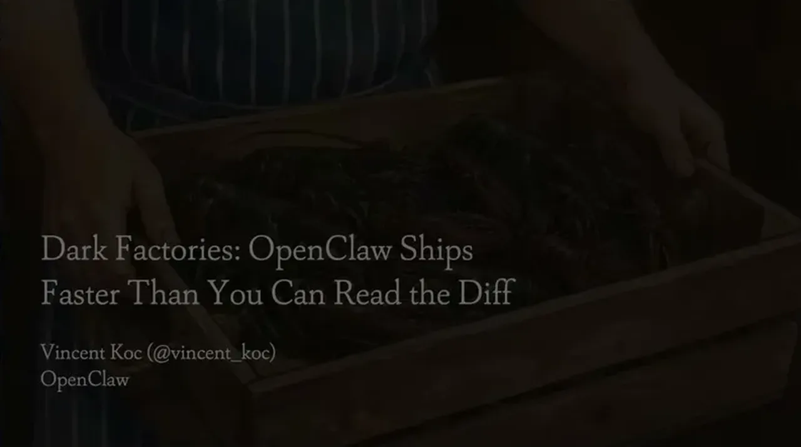
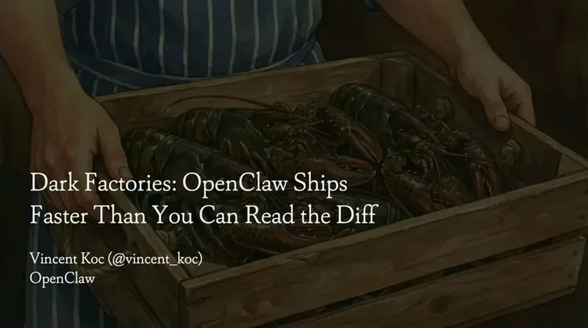
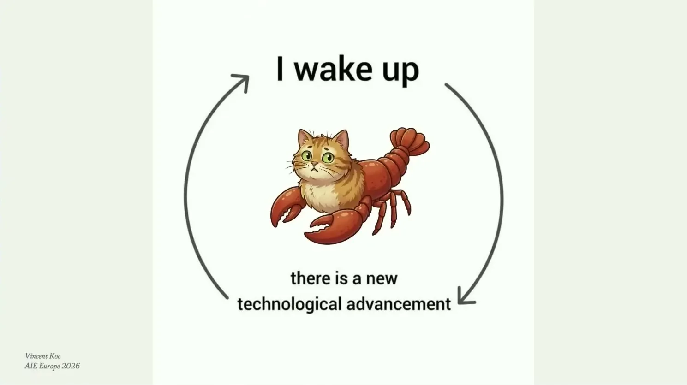
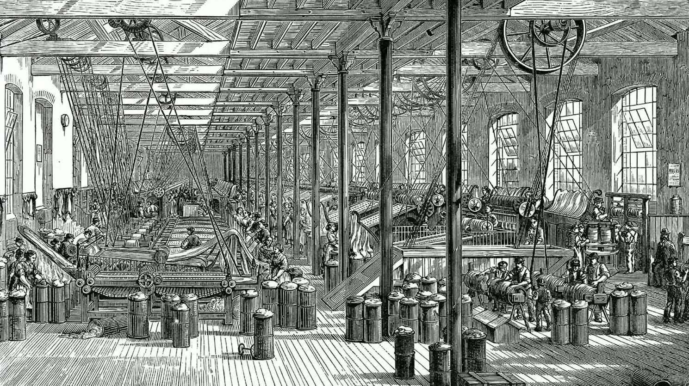
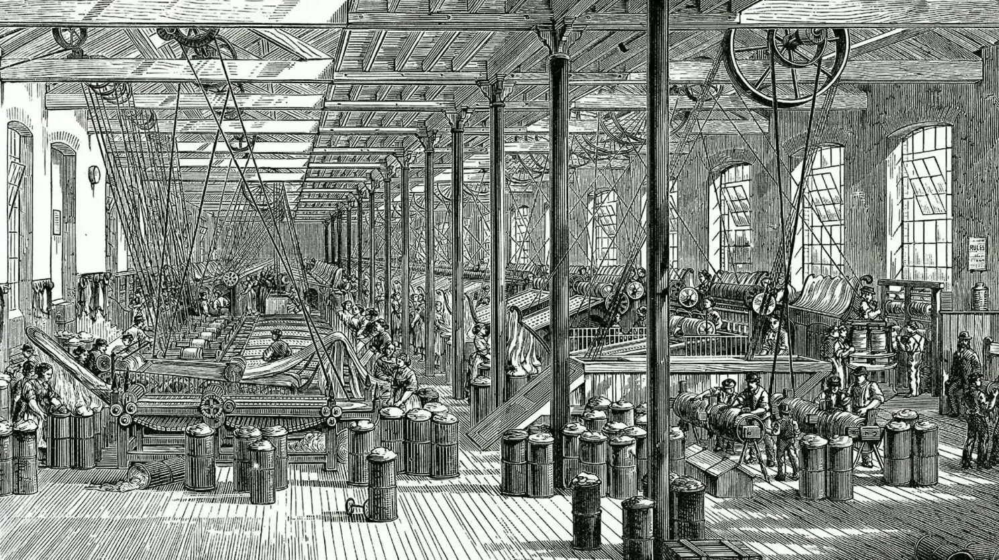
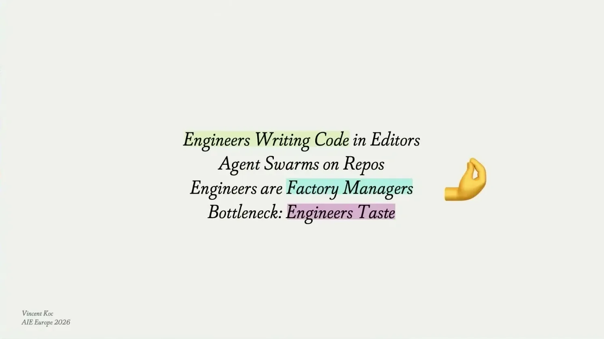
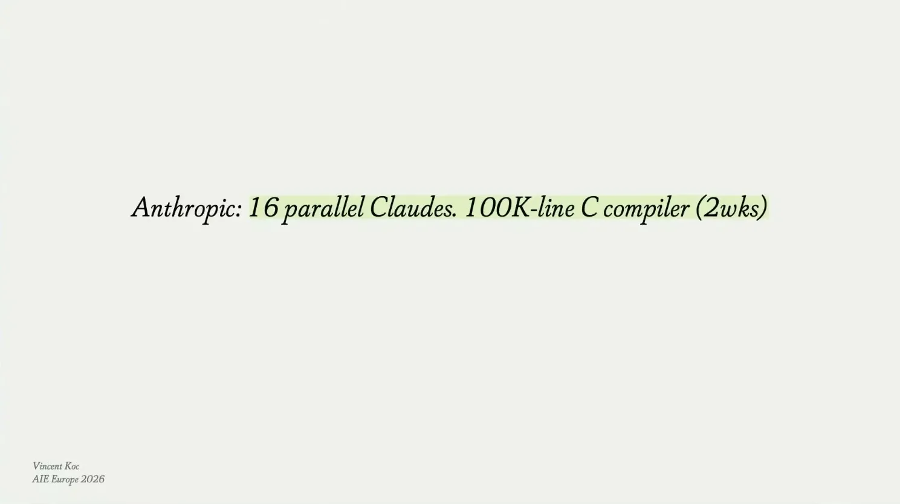
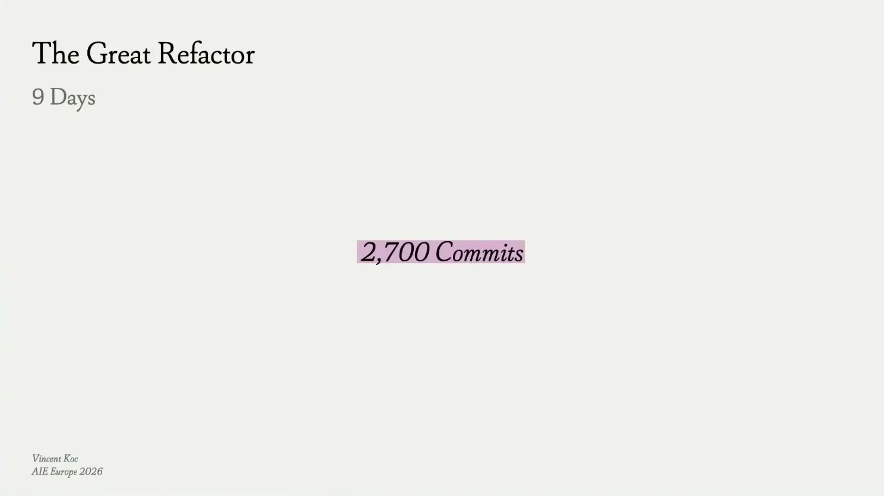
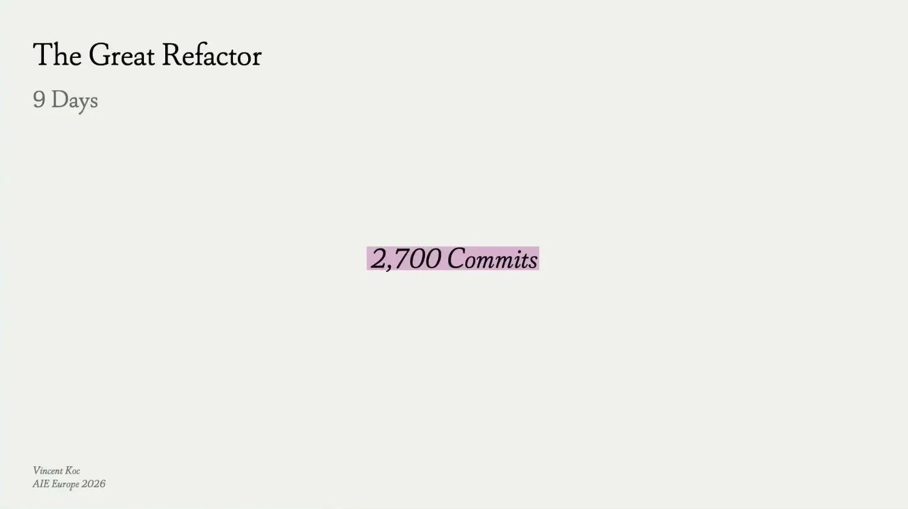
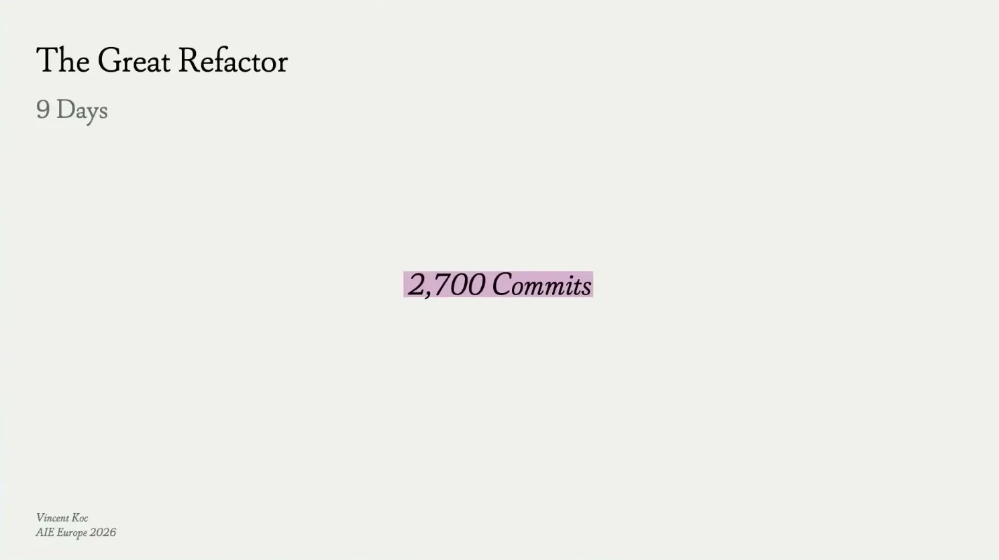
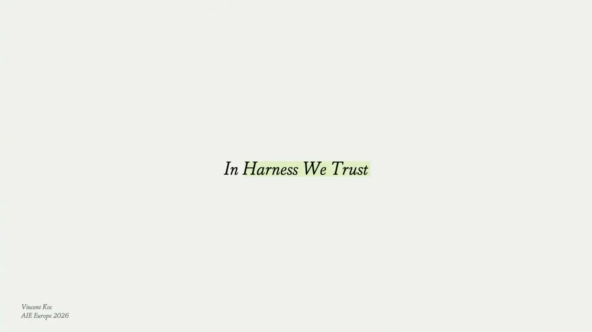
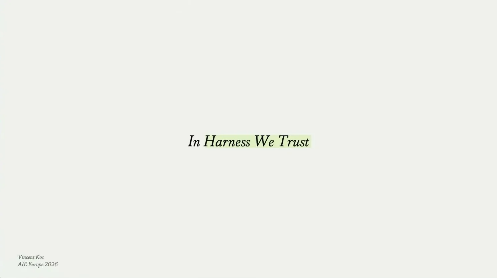
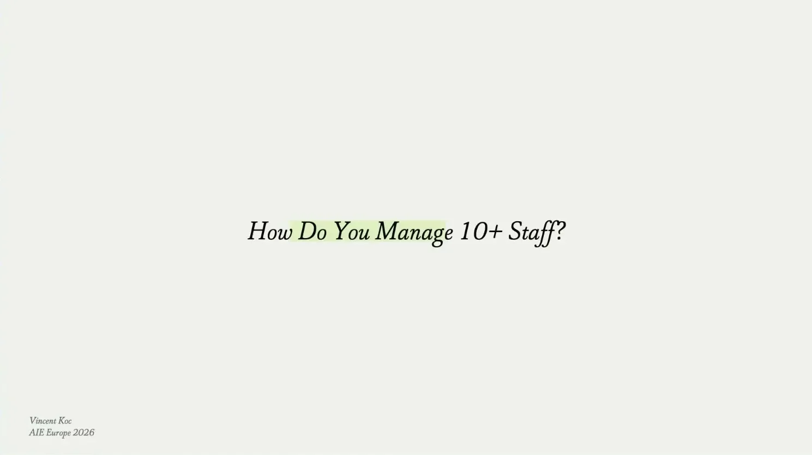
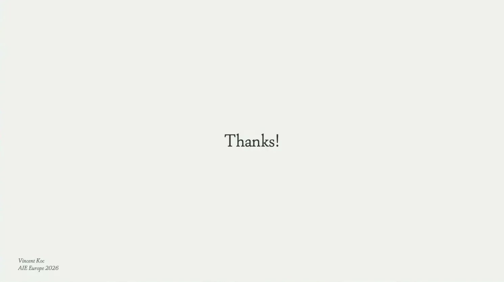
| Stance | Claim | t |
|---|---|---|
| asserts | OpenClaw peaked at roughly 800 commits a day project-wide across about 10-15 core maintainers. | 04:09 |
| asserts | The speaker personally hit close to 3,000 commits in a single day. | 04:40 |
| asserts | A late-night decision to move to a plugin architecture resulted in 2,700 commits and nearly a million lines of code changed, touching 82% of the core codebase. | 08:17 |
| asserts | The speaker frames himself as a factory manager overseeing a production line of parallel agent sessions rather than a line worker. | 09:49 |
| asserts | Tokens are no longer the constraint when running many parallel agent sessions; raw compute and the operator's own attention are. | 10:50 |
| warns | Heavy use of git worktrees for parallel agent sessions became its own operational problem, with up to 70-80 active worktrees on one machine. | 11:21 |
| asserts | The speaker judges whether an agent session has gone off track intuitively, based on how the agent explains itself rather than what it is doing. | 12:24 |
| asserts | The project has a large PR backlog (cited as roughly 6,000), and every new maintainer independently tries to cluster and deduplicate them. | 14:26 |
| predicts | 2025 was about maximizing token usage; 2026 will be about token efficiency and not wasting them. | 16:00 |
Machine-readable copy embedded in this page (script#ontology) and in the corpus ontology.